Deploying applications using ArgoCD with Helm on a brand new CodeReady Containers (CRC)
OpenShift cluster can streamline your CI/CD workflow by integrating GitOps practices. This blog post will guide you through setting up ArgoCD, configuring Helm, and deploying an application on a CRC OpenShift cluster. We will cover the following steps:
-
Setting Up CRC (CodeReady Containers) OpenShift Cluster
-
Installing ArgoCD on OpenShift
-
Configuring Helm on OpenShift
-
Deploying an Application using Helm and ArgoCD
Let's dive in!
1. Setting Up CRC (CodeReady Containers) OpenShift Cluster
CodeReady Containers (CRC) provides a minimal OpenShift 4 cluster, making it easy to test and develop on OpenShift locally. Follow these steps to get your CRC OpenShift cluster up and running:
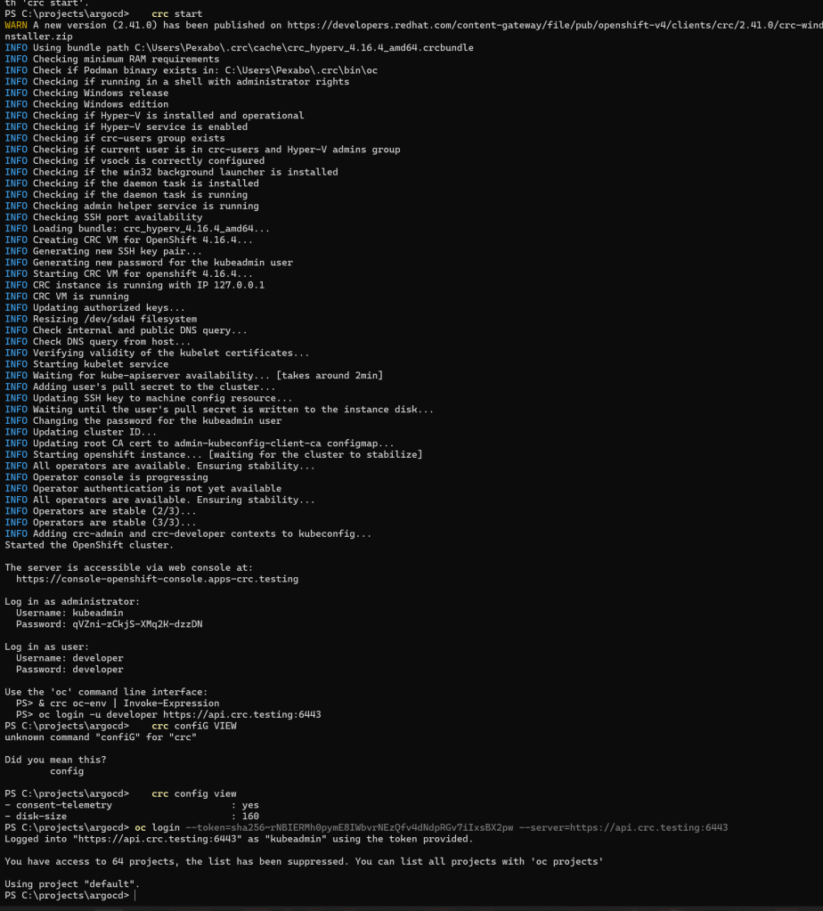
Step 1: Install CRC
Download and install CRC from the official Red Hat website. Make sure your system meets the minimum requirements. Once installed, start the CRC cluster:
crc setup
crc start
During the crc start command, you’ll be prompted to provide a pull secret. You can obtain this secret from the Red Hat OpenShift Cluster Manager.
Step 2: Log in to OpenShift
After starting the CRC, log in to your OpenShift cluster using the credentials provided:
oc login -u kubeadmin -p
Replace <password> with the one displayed at the end of the crc start process.
To deploy Argo CD using Helm, you need to follow several steps to ensure a smooth installation and configuration of the tool. Helm is a package manager for Kubernetes that allows you to define, install, and upgrade complex Kubernetes applications. Argo CD is a popular continuous delivery tool for Kubernetes, which makes it easy to implement GitOps practices by managing application deployments in a declarative manner.
Here's a step-by-step guide on how to deploy Argo CD using Helm:
Step 1: Install Helm
If you haven't installed Helm yet, you can install it by following the instructions on the official Helm website.
Step 2: Add the Argo CD Helm repository
First, add the Argo CD Helm repository to your Helm client:
helm repo add argo https://argoproj.github.io/argo-helm
helm repo update
Helm local with argo manifests ready to go
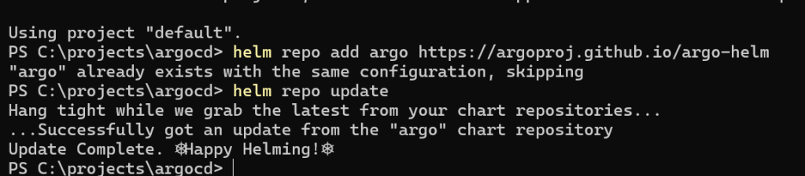
Step 3: Create a Namespace for Argo CD
It's a good practice to deploy Argo CD in its own namespace. Create a namespace for Argo CD:
oc create namespace argocd
Step 4: Install Argo CD using Helm
Now, use Helm to install Argo CD into the namespace you just created. You can use the default values or customize them as needed.
To install Argo CD with the default settings, run:
helm install argocd argo/argo-cd --namespace argocd
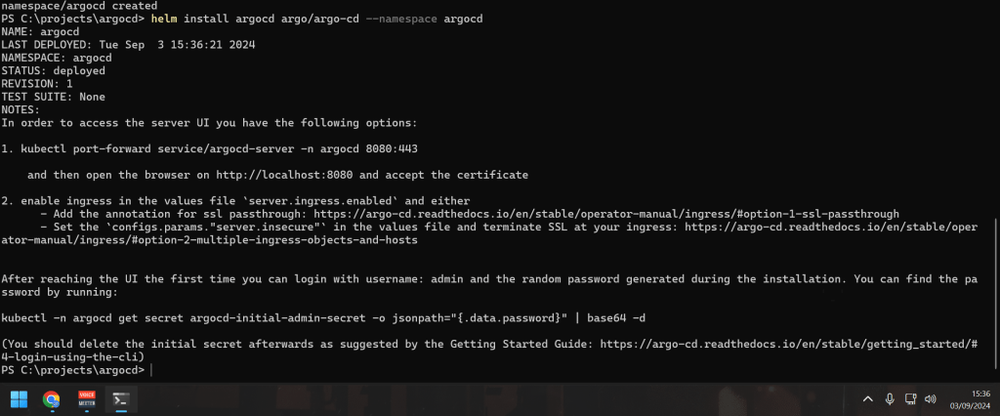
Step 5: Check the Installation
To verify that Argo CD has been installed correctly, you can check the pods running in the argocd namespace:
oc get pods -n argocd
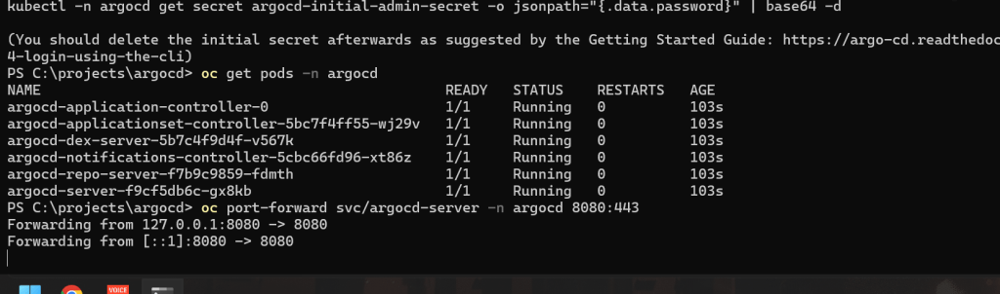
You should see several pods, including argocd-server, argocd-repo-server, argocd-redis, and others.
Step 6: Access the Argo CD UI
By default, Argo CD's API server is not exposed via a LoadBalancer or Ingress. You can access it using kubectl port-forward:
oc port-forward svc/argocd-server -n argocd 8080:443

Now you can open your web browser and go to https://localhost:8080 to access the Argo CD web UI.
Step 7: Login to Argo CD
The initial password for the admin user is auto-generated and stored in a Kubernetes secret. To get this password, run:
oc-n argocd get secret argocd-initial-admin-secret -o jsonpath="{.data.password}" | base64 -d
oc-n argocd get secret argocd-initial-admin-secret -o jsonpath="{.data.password}" | ForEach-Object { [System.Text.Encoding]::UTF8.GetString([System.Convert]::FromBase64String($_)) }
Use the username admin and the password you retrieved to log in to the Argo CD UI.
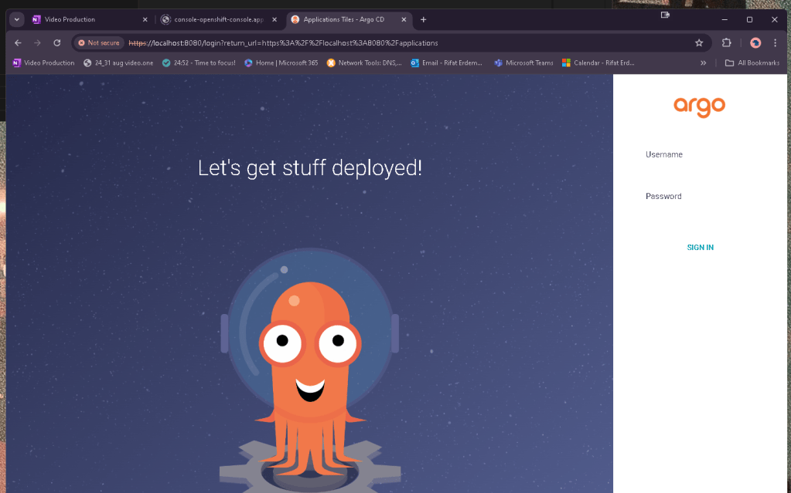
Port forward is online
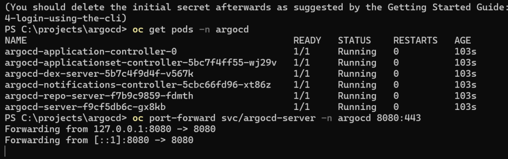
and i got the password
vD-hLiGz1FJiPPsd
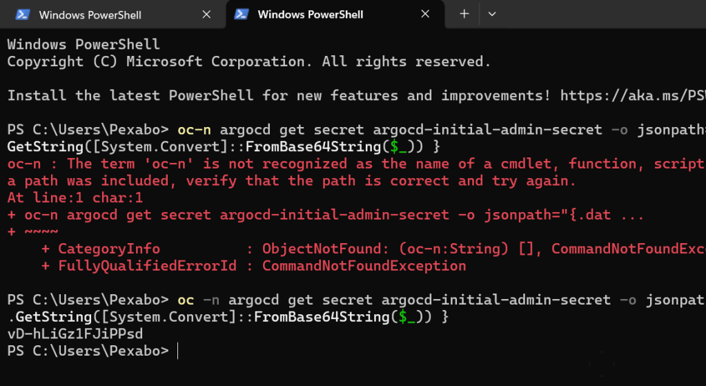
happiness
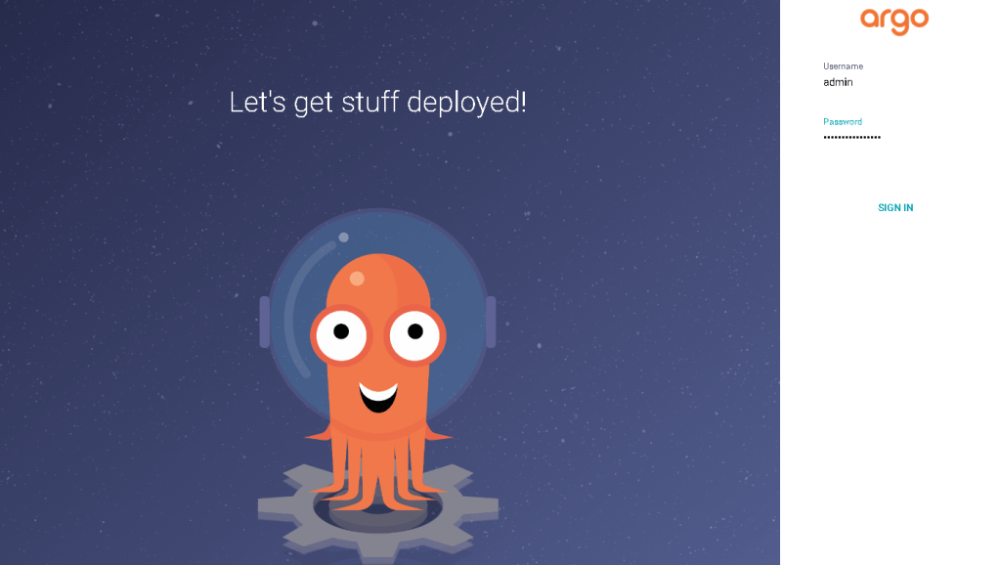
Step 8: (Optional) Customize Argo CD Installation
If you need to customize your Argo CD installation, you can create a values.yaml file and specify your custom configurations there. Here’s an example command to install Argo CD with custom values:
- Create a
values.yamlfile:
server:
service:
type: LoadBalancer
- Install Argo CD using the custom
values.yaml:
helm install argocd argo/argo-cd --namespace argocd -f values.yaml
This will install Argo CD with the specified customizations.
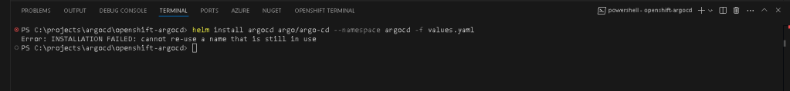
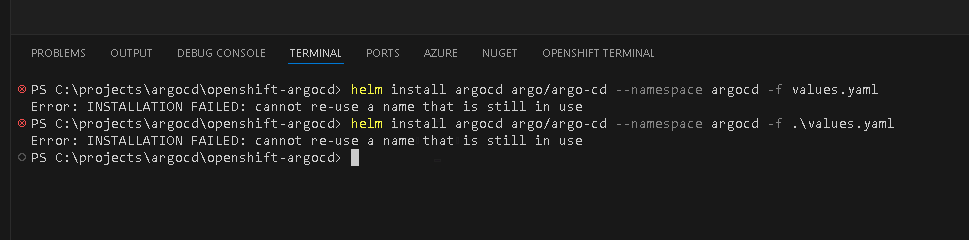
The error message you're encountering, "INSTALLATION FAILED: cannot re-use a name that is still in use," indicates that there is already an existing Helm release with the name argocd in the argocd namespace. To resolve this, you have a few options:
Option 1: Upgrade the Existing Release
If you want to update the existing argocd installation with new values or configurations, you should use the helm upgrade command instead of helm install. Here’s how you can do it:
helm upgrade argocd argo/argo-cd --namespace argocd -f values.yaml
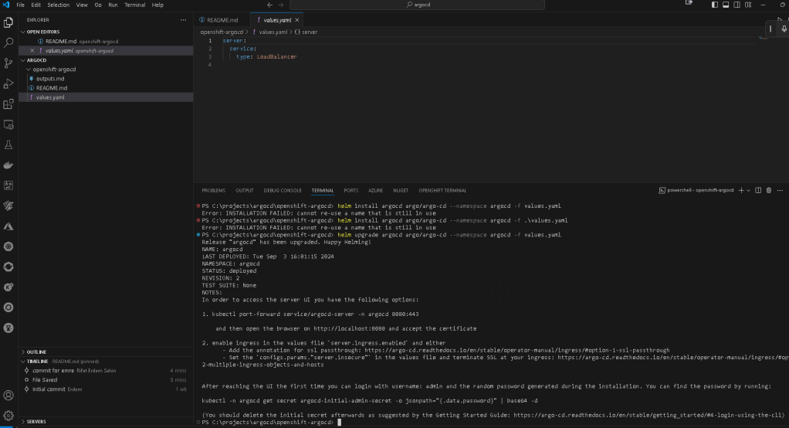
Can i turn off ?
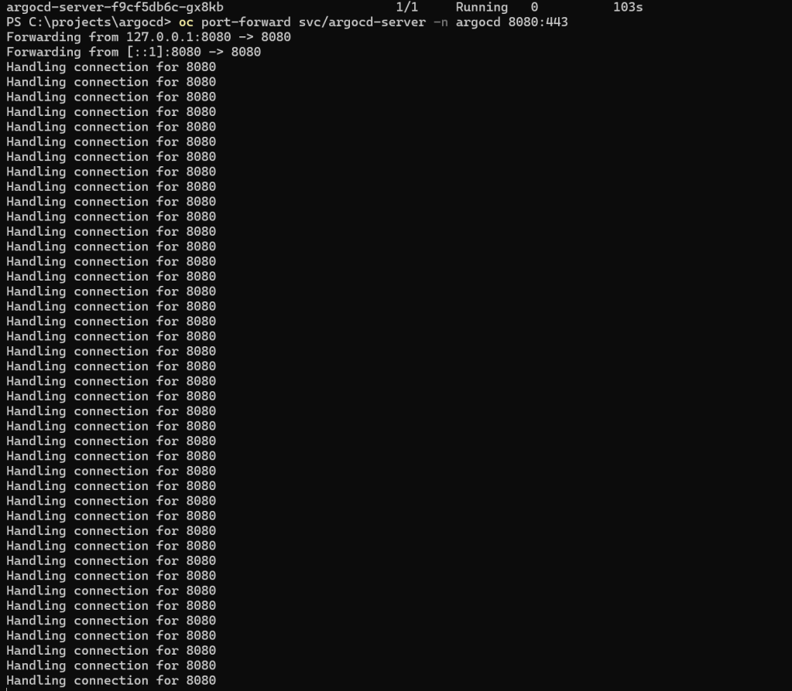
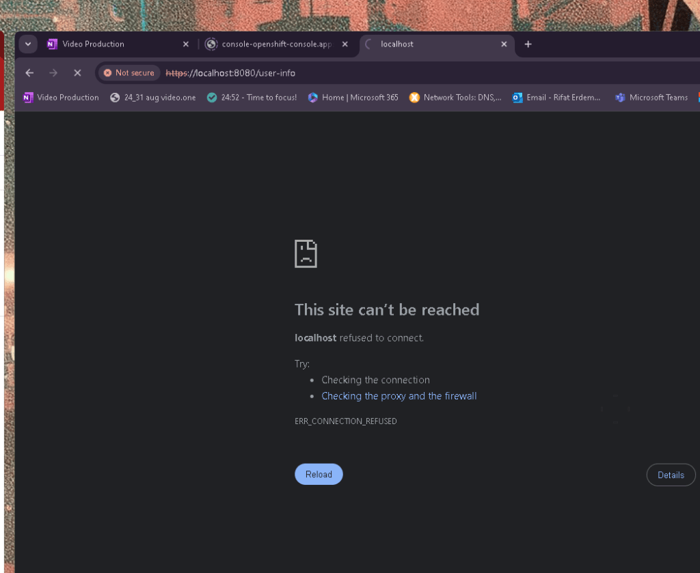
Load balancer >>> is not enough to keep this on
`PS C:\projects\argocd\openshift-argocd> helm upgrade argocd argo/argo-cd --namespace argocd -f values.yaml
Release "argocd" has been upgraded. Happy Helming!
NAME: argocd
LAST DEPLOYED: Tue Sep 3 16:01:15 2024
NAMESPACE: argocd
STATUS: deployed
REVISION: 2
TEST SUITE: None
NOTES:
In order to access the server UI you have the following options:
-
kubectl port-forward service/argocd-server -n argocd 8080:443
and then open the browser on http://localhost:8080 and accept the certificate
-
enable ingress in the values file
server.ingress.enabledand either- Add the annotation for ssl passthrough: https://argo-cd.readthedocs.io/en/stable/operator-manual/ingress/#option-1-ssl-passthrough
- Set the
configs.params."server.insecure"in the values file and terminate SSL at your ingress: https://argo-cd.readthedocs.io/en/stable/operator-manual/ingress/#option-2-multiple-ingress-objects-and-hosts
After reaching the UI the first time you can login with username: admin and the random password generated during the installation. You can find the password by running:
kubectl -n argocd get secret argocd-initial-admin-secret -o jsonpath="{.data.password}" | base64 -d
(You should delete the initial secret afterwards as suggested by the Getting Started Guide: https://argo-cd.readthedocs.io/en/stable/getting_started/#4-login-using-the-cli)
PS C:\projects\argocd\openshift-argocd> history`
Option 2: Uninstall the Existing Release
If you want to completely remove the existing argocd release and start fresh, you can uninstall it and then run the install command again:
- Uninstall the existing release:
helm uninstall argocd --namespace argocd
- Install Argo CD again:
helm install argocd argo/argo-cd --namespace argocd -f values.yaml
Option 3: Install with a Different Release Name
If you want to keep the existing argocd release but install a new instance with different configurations or in a different namespace, you can use a different release name:
helm install argocd-new argo/argo-cd --namespace argocd -f values.yaml
Replace argocd-new with your desired new release name.
Option 4: Check Existing Releases and Clean Up
To see all existing Helm releases in the argocd namespace, you can use:
helm list --namespace argocd
If you see an old or failed release, you can decide whether to delete it or upgrade it.
By following one of these options, you should be able to resolve the "cannot re-use a name that is still in use" error and successfully manage your Helm releases.
Summary
You've now deployed Argo CD on your Kubernetes cluster using Helm! You can customize further based on your requirements, such as enabling SSL, configuring authentication, or setting up Argo CD projects and applications.
If you have any further questions or need more customization details, feel free to ask!
Repo > https://github.com/rifaterdemsahin/openshift-argocd
🔗 Connect with me:
-
💼 LinkedIn: https://www.linkedin.com/in/rifaterdemsahin/
-
🐦 Twitter: https://x.com/rifaterdemsahin
-
🎥 YouTube: https://www.youtube.com/@RifatErdemSahin
-
💻 GitHub: https://github.com/rifaterdemsahin
History commands 1
`PS C:\projects\argocd\openshift-argocd> history
Id CommandLine
1 try { . "c:\Program Files\Microsoft VS Code\resources\app\out\vs\workbench\contrib\terminal\browser\media\shellIntegration.ps1" } catch {}
2 helm install argocd argo/argo-cd --namespace argocd -f values.yaml
3 helm install argocd argo/argo-cd --namespace argocd -f .\values.yaml
4 helm upgrade argocd argo/argo-cd --namespace argocd -f values.yaml
5 history
`
PS2: TURN ON TO SERVE
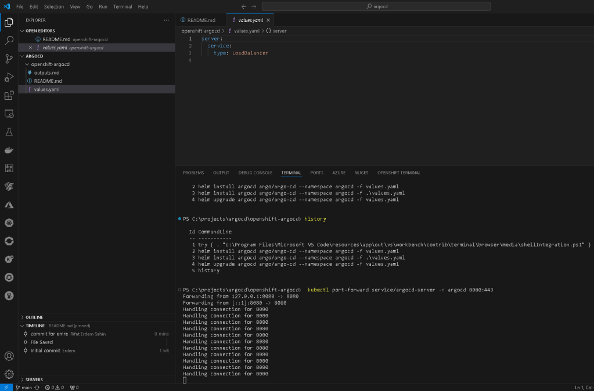
Imported from rifaterdemsahin.com · 2024